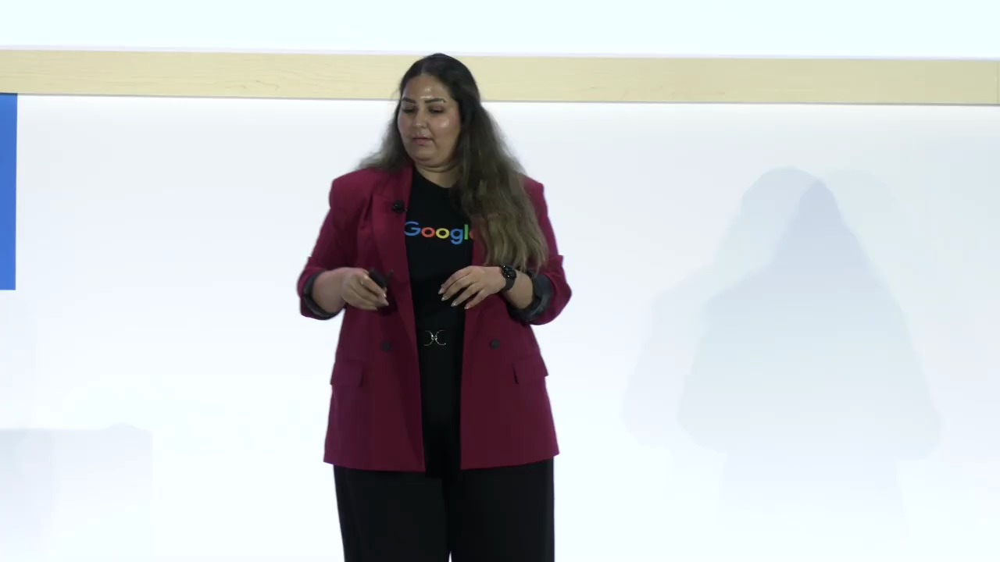
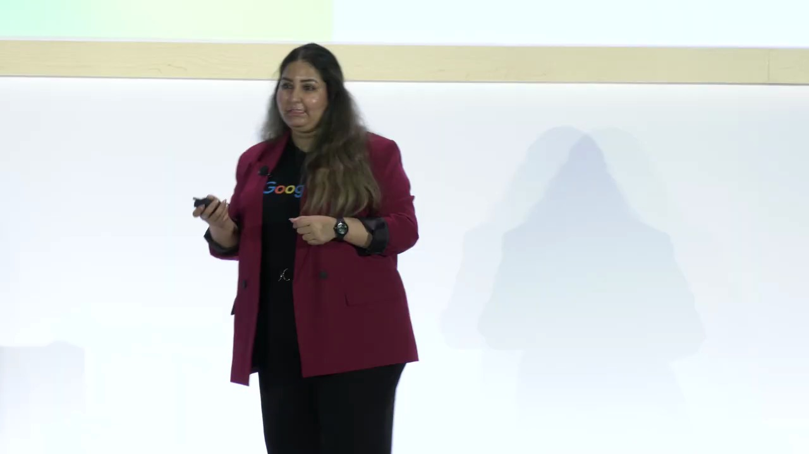
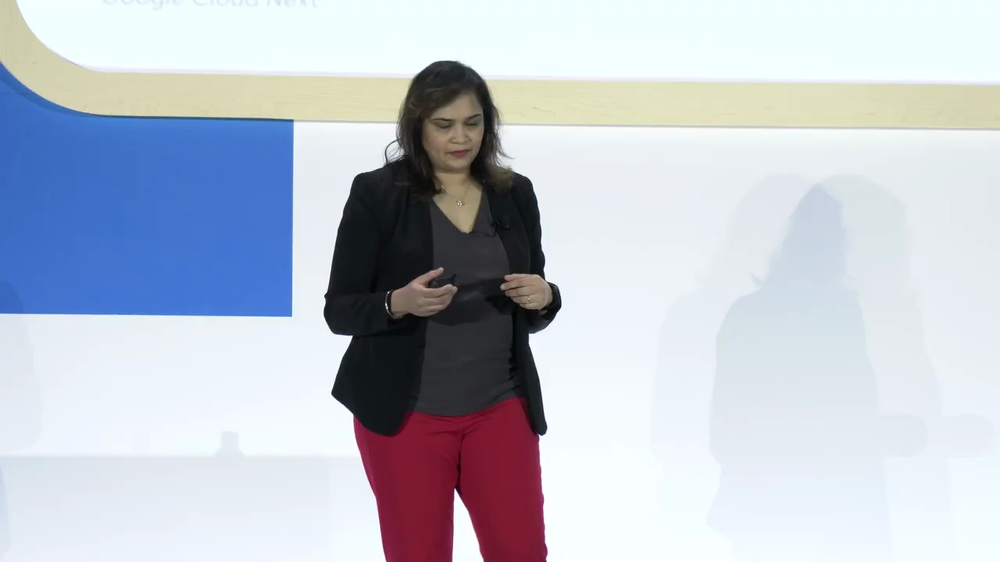
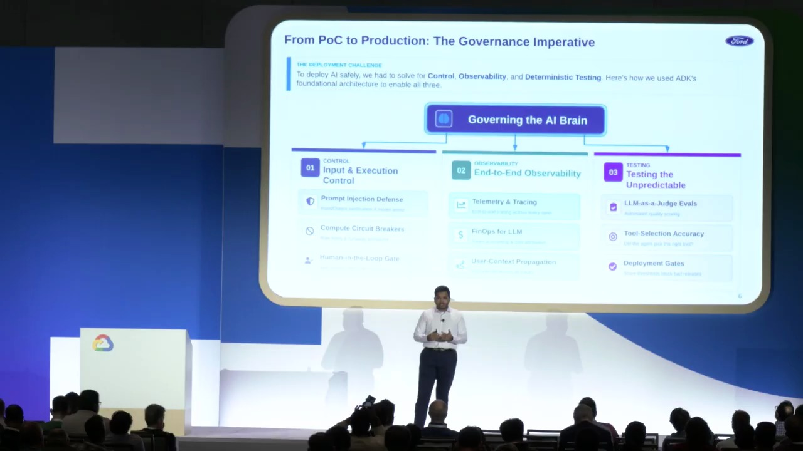

Key Moments




Summary & Script
Build production-ready agents on Google Cloud: A guide for architects and CTOs
Source: https://www.youtube.com/watch?v=Mq4ZY3eE5dI
Video ID: Mq4ZY3eE5dI
Overview
In this closing session of the Google Cloud AI Agents series, Sita (Developer Relations Engineer, Google Cloud), Kanchana Patola, and Siddharth Jain (Ford Credit) walk architects and CTOs through the end‑to‑end process of taking generative‑AI agents from prototype to production. The talk is organized around five guiding principles—build, scale, govern, optimize, and observe—each illustrated with Google Cloud tooling (Agent Studio, Agent Garden, ADK, Agent CLI, Agent Platform, etc.) and a real‑world case study from Ford Credit.
Topics Covered
- Four‑stage agent life‑cycle – Build, scale, govern, and optimize agents; each stage has concrete Google Cloud primitives.
- Jump‑starting development – Different personas (non‑technical, low‑code, hardcore developers) get matching tools: Agent Studio (visual canvas), Agent Garden (click‑to‑deploy samples), and the Agent Development Kit (ADK) with the new Agent CLI.
- Separating concerns – Introduce MCP (agent‑to‑tool abstraction), A2A (agent‑to‑agent protocol), and Skills (markdown‑based rule packages) to keep agent logic independent of external APIs, other agents, and large prompt contexts.
- Scaling decisions – Choose short‑term vs. long‑term memory strategies (Agent Platform Sessions & Memory Bank vs. custom RAG pipelines) and pick an appropriate runtime (Agent Platform Runtime, Cloud Run, GKE) based on latency, cost, human‑in‑the‑loop, and long‑running operation needs.
- Governance through infrastructure – Use SPIFFE‑backed Agent Identity, a centralized Agent Registry, granular Agent Policies (IAM & NL policies), and an Agent Gateway to enforce visibility, access control, and security rather than relying on prompt engineering.
- Observability & evaluation – Capture logs, traces, and metrics for agents; evaluate not just output correctness but also decision pathways using both human‑defined and LLM‑derived criteria.
- Ford Credit production story – Siddharth demonstrates how the firm integrated these patterns to deploy secure, high‑throughput agents for credit‑workflow automation.
Key Takeaways
- One tool does not fit all – Match the development experience to user skill level (visual, low‑code, or full‑code).
- Decouple agents from dependencies – MCP, A2A, and Skills act as abstraction layers that protect agents from API changes, reduce prompt size, and improve latency/cost.
- Leverage built‑in memory services – Use Agent Platform Sessions (short‑term) and Memory Bank (vector DB for long‑term) unless strict compliance or custom RAG requirements dictate otherwise.
- Select the right runtime early – Start with Agent Platform Runtime for feature‑rich, managed experience; move to Cloud Run or GKE only when traffic, portability, or custom infrastructure demands arise.
- Govern via identity and policies – SPIFFE IDs, a unified registry, and a gateway provide robust, auditable control over what agents can see and do.
- Observability is mandatory – Instrument agents with logs, traces, and custom metrics; evaluate both outcomes and execution paths to ensure reliability.
- Production is iterative – Continuously revisit build‑vs‑buy trade‑offs, memory strategies, and governance settings as the agent ecosystem evolves.
Notable Quotes
- “If you write a Python call directly to an API, you’re tightly coupling your agent to that tool; MCP is the abstraction layer that protects you from schema changes.”
- “Governance is not a prompt‑engineering problem – you can’t reliably stop a rogue action with a single sentence in the prompt.”
- “Don’t over‑engineer your runtime before there’s an actual need for it – start with the managed Agent Platform and only move to Cloud Run or GKE when you truly need the extra flexibility.”
(No announcements of new features were made in this session.)
Podcast Script
JORDAN: Hey everyone, welcome back to the podcast! I'm Jordan, your go‑to for the nitty‑gritty of how things actually work under the hood.
MIKE: And I'm Mike, here to connect the dots to the big picture and why you should care. Today we’re diving into a recent Google Cloud session on building production‑ready AI agents.
JORDAN: The speaker, Sita, broke the agent lifecycle into four buckets: build, scale, govern, and optimize. It's a clean way to think about moving from a prototype to a fully‑managed service.
MIKE: Right, and she emphasized that this year isn’t just about building agents—it’s about building the surrounding systems that keep them resilient, secure, and cost‑effective.
JORDAN: Let’s start with the first principle: jump‑starting agent building. She mentioned three personas—non‑coders, low‑code folks, and hardcore developers—each getting a different tool: Agent Studio, Agent Garden, and the Agent Development Kit (ADK).
MIKE: I love that approach. It means you can get a subject‑matter expert dragging and dropping components while the engineering team works with the ADK and the new Agent CLI for programmatic builds.
JORDAN: The second principle focused on separating concerns using MCP, A2A, and “skills.” MCP is an abstraction layer so agents don’t call APIs directly, reducing breakage when schemas change.
MIKE: And A2A—agent‑to‑agent communication—lets you delegate tasks without hard‑coding integration logic. It’s basically microservice‑style decoupling, but for LLM agents.
JORDAN: The “skills” concept is essentially a markdown file containing business rules, data, and resources that agents can load on demand. This avoids stuffing everything into the LLM’s context window, which would blow up latency and cost.
MIKE: That’s a game‑changer for enterprises. Instead of paying for massive prompt tokens, you keep the knowledge external and only fetch what you need, when you need it.
JORDAN: Moving on to scaling, Sita warned us to ask if an agent even needs memory. If it’s a simple lookup, skip short‑term and long‑term storage. Otherwise, you have two paths: a custom RAG pipeline or the built‑in Agent Platform Memory Bank.
MIKE: The Memory Bank is a managed vector store with asynchronous updates, so you get semantic search without the latency hit. It’s perfect for teams that want out‑of‑the‑box long‑term recall.
JORDAN: Runtime choices were also covered—local development, Agent Platform Runtime, Cloud Run, or GKE for massive fleets. The key is to avoid over‑engineering until you hit real traffic thresholds.
MIKE: And the “bring your own container” option gives you up to a 7‑day TTL, which is handy for workloads that need longer processing windows, like batch analytics or compliance checks.
JORDAN: Governance was the fourth principle, and the speaker was clear: don’t rely on prompt engineering to enforce policies. Instead, use infrastructure—SPIFFE‑backed agent identities, a centralized agent registry, and policy enforcement via an agent gateway.
MIKE: That’s huge for security teams. You get IAM‑style controls, token management, and a single pane of glass for visibility, so rogue agents can be detected before they cause damage.
JORDAN: Finally, observability and evaluation. It’s not enough to glance at outputs; you need logs, traces, metrics, and evaluation of the agent’s decision path. The platform ties all of that together for continuous monitoring.
MIKE: Which means you can set both human‑defined and LLM‑defined metrics, ensuring agents stay on the right trajectory—not just producing the right answer, but arriving there safely and efficiently.
JORDAN: To sum up, building production AI agents today is a disciplined process: pick the right tooling for your users, abstract away dependencies, decide wisely on memory and runtime, lock down governance, and instrument everything for observability.
MIKE: Exactly. If you follow those five principles, you’ll move from a cool demo to a resilient, secure service that scales with your business. Thanks for listening, and we’ll catch you on the next episode!